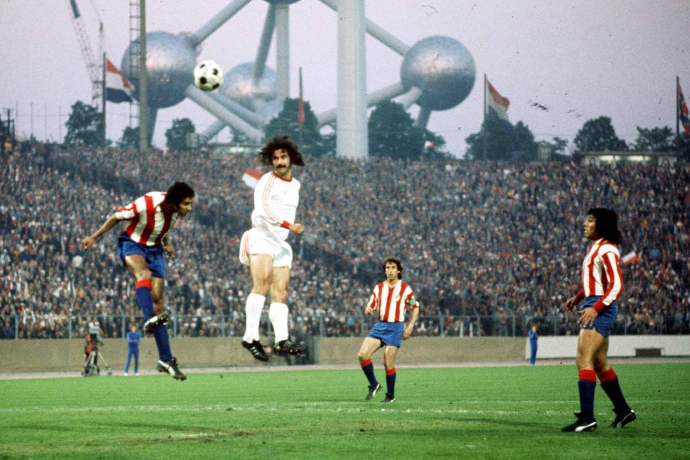

Historia del Atlético de Madrid
Un club de lucha y sacrificio
1. Los Inicios (1903 - 1939)
El Atlético de Madrid nació el 26 de abril de 1903, fundado por un grupo de estudiantes vascos. En sus primeros años, jugaban con camisetas azul y blanca, pero en 1911 cambiaron a los colores rojiblancos que los caracterizan hoy en día.
En 1923, el club inauguró su primer estadio, el Metropolitano, que fue su hogar hasta 1966. La Guerra Civil Española frenó el crecimiento del club, pero este logró sobrevivir.
2. Nace el Atlético Aviación (1939 - 1950)
Tras la Guerra Civil, el club se reorganizó como Atlético Aviación, ganando sus primeras Ligas en 1940 y 1941. En 1947, el club volvió a su nombre original, Club Atlético de Madrid, y comenzó una nueva etapa de crecimiento.
3. Años Dorados (1950 - 1970)

En las décadas de los 50 y 60, el Atlético vivió su primera época dorada, ganando múltiples Ligas y Copas. Figuras como Luis Aragonés destacaron en este período, y el club se consolidó como un rival fuerte para el Real Madrid.
4. 1970 - 1990: Campeones de Europa y del Mundo

En 1974, el Atlético llegó a su primera final de la Copa de Europa, perdiendo contra el Bayern Múnich. Sin embargo, ese mismo año, el club ganó la Copa Intercontinental, convirtiéndose en campeones del mundo.
5. 1990 - 2000: Del Doblete al Descenso

En 1996, el Atlético ganó la Liga y la Copa del Rey, logrando un histórico doblete. Sin embargo, en el año 2000, el club descendió a Segunda División debido a una mala gestión.
6. 2000 - 2010: Resurrección y Títulos Europeos
Tras regresar a Primera División, el Atlético se recuperó con jugadores como Diego Forlán y Sergio Agüero. En 2010, el club ganó la Europa League y la Supercopa de Europa.
7. 2010 - Hoy: La Era Simeone
La llegada de Diego Simeone en 2011 marcó un antes y un después. Bajo su dirección, el Atlético ganó la Liga en 2014 y 2021, y llegó a dos finales de la Champions League.